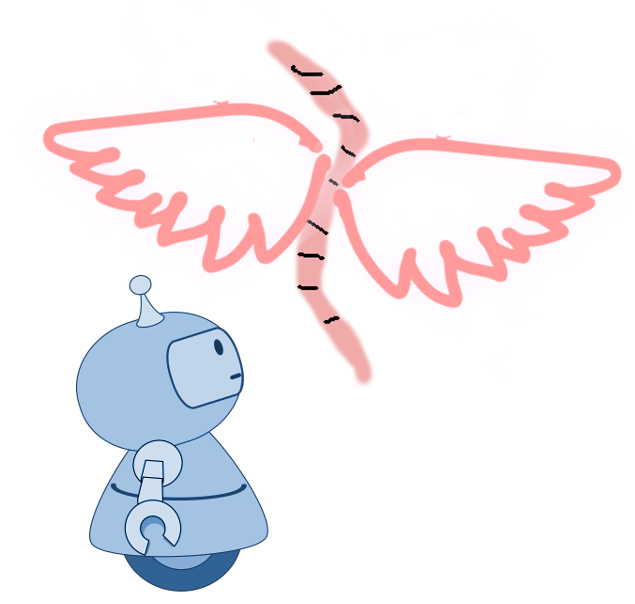
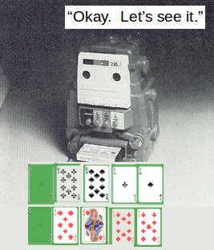

397A1: '天使とミミズのヒューリスティックス'事件¶
{kind=link}
依頼人¶
単科の私立大学事務職員。理事長が中堅若手教員と事務職員から選抜して、将来の大学経営を考える特別チームを作った。そのメンバーに選ばれた。
依頼内容¶
メンバーとはいっても、とりあえずは議事メモ担当のようなもので、たまに事務系として規程関係のことについて質問されれば、調べて答えるくらいの役割である。教員たちもただでさえ用務が多くて大変なので、どこまで本気か分からない。大学運営の合理化のためにいずれAI導入は不可避といったようなことが漠然と議論されている。そうであるなら、早めにとりくんだ方がいいと思うのだが、その分野の専門家を呼んできて話を聞いても、いま一つピンと来ない。
ヒューリスティクスとかアルゴリスミック・マネージメントとかいうのだそうだが、もっと大きなところならともかく、学校の規模を考えると、かえって手間が増えて大変になる気もする。
しかし、怖がってばかりもいられないので、不安を解消できるような情報があれば教えて欲しい。
調査報告¶
タイポ¶
チャーリーは夜遅くの列車で小さな田舎の駅に一人で降り立つと、
雨の中を数km先の町境まで歩いて行く。
境界をまたぐと、歩いて来た方に振り返る。標識には、
"You are now entering Haveen"と記してある。
腕時計が予定の時間を指す直前、彼は再び町境をまたいだ。
明るい光に照らされた中に門があり、白いローブをまとった存在がびっくりした面持ちで
彼を見つめていた。
1943年2月号のアンノウン・ワールズ誌にフレドリック・ブラウンの短編"The Angelic AngleWorm"が掲載された。短命だったこのパルプ雑誌はこの年に発行をやめることになる。戦時の深刻な紙不足がとどめをさしたのだという。1940〜43年、ブラウンは生活のためにパルプ誌に次々と短編を出していくのだが、まだ執筆だけでは暮らしていけなかった。職業作家としてやっていけるようになるのは、やっとこの翌年ころからである [1] 。
さて、主人公のチャーリーがHaveenの町境をまたいでHeavenに侵入したいきさつは、次のとおりである。
事件は、ある朝、釣餌にするために庭の土を掘り返してミミズをとろうとした時に始まる。つまもうとした指先から、ミミズが天使の羽根をはやして、彼の鼻先をかすめ、みるみる空に舞い上がって見えなくなってしまったのである。以来、主人公は次々と異常な事件に見まわれる。異常な事件をふりかえって整理してみると、まず、そこには周期性があることに気づいた。事件はちょうど51時間10分おきに発生しているのだった。ちょうどその時点に、彼が何かしらの行動を起こそうとすると、その瞬間、何かが別の何かにすり替わってしまうのだった。釣餌のミミズが天使ミミズにすり替わってしまったように。
ちなみに、彼の仕事は印刷会社の製作助手である。それぞれの事件において、すり替わる前のものと、替わった後のものの名前を並べて書いてみて、やっと異常事象のメカニスムらしきものに気づいた。それで、最後の事件からちょうど51時間10分が経過する直前にに、Haveenに入る町境に立ったのである。
(以下、"Angelic angleworm"からの抜き書き)
The white-robed entity at the gate ahead stared at Charlie in astonishment.
"Who’s in charge of the printing?"
"The Head Compositer of course."
It was quite pleasant and familiar, that office. Not a lot different from Charlie’s own office
at the Hapworth Printing Co.
その先の門のところに白いローブをまとった存在が、びっくりした顔でチャーリーを見つめていた。
「印刷責任者はいますか?」
「もちろん、編集主任がおります。」
印刷編成室は実に快適そうで、彼にはおなじみな感じがした。ハップワース印刷会社の彼のオフィスとそれほど違わなかった。
チャーリーは印刷業にたずさわっていたので、天界の印刷所のミスに気づくことができた。欧米の商業印刷は1980年ころまでライノタイプ [2] を主に使っていた。これは、キーボードを叩くことで、活字母を一行に並べた印刷鋳型を作る機械である。そこに溶けた鉛を流しこんで、いちどに印刷版型までしあげてしまう。
{kind=link}
ライノタイプ・キーボードのキーを叩くと、活字母マガジンの各チャンネルから該当する活字母(mat)が型枠に落とされる。鋳込みが終わると、matは自動的にまたマガジンに戻される。チャーリーの使っているライノタイプでは、文字 e のmatは60秒程度で循環するようになっている。天界で使われていたライノタイプの容量ははるかに大きいので、matの循環周期が51時間10分だったのである。
英語で文字 e は使用頻度が高いために、matがすり減って、分配器のところで本来のタイミングより早く落ちてしまうことが良くあった。すると誤植が起きる。チャーリーの人生の本のなかで、anglewormがangelwormに、HaveenがHeavenになってしまったのはこのためである。この些細だが本人にとっては深刻なまちがいを指摘するために、チャーリーはHaveen経由でHeavenに来たのだった。
天界の門¶
あるていどの規模の組織は、その運営の安定性と関係者にとっての予測可能性のために、官僚制の要素を取り入れざるを得ない。一組織体だけではなく、その組織体と何らかの関係を持つ別の組織体にとっても、相手の安定性と一定の予測可能性は大切な要素である。経営理論はさまざまに新しいものが提案されるが、本質的なところでどれほど変わっただろうか。
2010年8月にウォールストリート・ジャーナル誌に、"The End of Management"という記事 [Mag1] が出た。そこでは、会社組織は市場でのいわゆる"transaction costs"(取引コスト [3] )を最小化する手段として必然的に存在するものであるとされてきたのだが、インターネットの時代になって、取引コストが革命的に小さくなるにともない、会社はその経営形態を大きく変えることを迫られているといったようなことが書かれていた。
そして、それから10年後の2020年7月、Boston Consulting Groupの記事に、"The End of Bureaucracy, Again?"(「官僚制の終焉、また?」)というものがあった [Mag2] 。企業は依然として官僚的に運営されていて、それはそう簡単には変わらないと認めたうえで、そういった官僚的組織形態はさすがに"breaking point"を越えようとしていると論じている。
ところで、天界での些細なまちがいが、人間社会に混乱をもたらすというのは、昔から喜劇で用いられてきたテーマである。喜劇は、天界の入口にいる天使たちが、ごくまれに(チャーリーの言葉を借りれば"once in infinity")小さな間違いを起こすことに始まる。
天界でまちがいが起きる可能性があるのは、その入り口である。したがって、天界の門には天使たちのあいだに官僚制的な仕組みが機能していなければならない。そこは下界との接点なので、使われているテクノロジーも下界のそれにリンクされている。下界でライノタイプが使われていれば、天界でもライノタイプが導入されるのである。
フレドリック・ブラウンはライノタイプを作品中にたびたび登場させた。極めて効率的だが、使っているうちに必ず誤作動を起こしてナンセンスな文章を出力する、しかし、その誤作動は機械を知っている者には説明がつくし回復可能であるというところに、特別な愛着を感じたのかもしれない。
ブラウンがたとえスマートフォンの時代を予測できたとしても、かなうものなら天国ではライノタイプを使い続けて欲しいと思ったかもしれない。しかし、ライノタイプより信頼性が低いとしても、新しいシステムの取り入れに天使たちが迷ったとは思えない。訂正はいつものことで、何も変わらず、すべてが変わるように経営してきたので、当然の対応なのである。
発見的ゲーム¶
United States
Patent Application Publication
Pub. No.: US 2008/0174570 A1
Jobs et al.
Pub. Date: Jul. 24, 2008
Touch screen device, method, and graphical user interface for determining commands by applying heuristics.
合衆国
米国特許出願公開
公開番号： US 2008/0174570 A1
出願人: ジョブズ、他
公開日: 2008年7月24日
「ヒューリスティックスを適用することによりユーザー命令を決定するための
タッチスクリーン装置、方法、ならびにグラフィカル・ユーザー・インターフェース」
「ヒューリスティックスを適用することによりユーザー命令を決定するためのタッチスクリーン装置、方法、ならびにグラフィカル・ユーザー・インターフェース」とは、iPhoneのことである。
この出願が特許に値するのかどうかについては、さまざまな議論があった。この分野の技術者たちの多くにとっては、技術要素のどれ一つをとっても新規な点はないように見えたためである。しかし、それらの議論の帰趨はともかく、スマートフォンの出現が良くも悪くも人間社会にとてつもなく大きな影響を与えたことは、疑えない事実である。
この発明名称にわざわざ、「ヒューリスティックスを適用することによりユーザー命令を決定する」としているところが目を引く。ヒューリスティクスとはなんだろうか。
A heuristic (heuristic rule, heuristic method) is a rule of thumb, strategy, trick, simplification,
or any other kind of device which drastically limits search for solutions in large problem spaces.
Heuristics do not guarantee optimal solutions; in fact, they do not guarantee any solution at all;
all that can be said for a useful heuristic is that it offers solutions
which are good enough most of the time.
ヒューリスティック（ヒューリスティック・ルール、ヒューリスティック・メソッド）とは、
目の子勘定、戦略、トリック、単純化など、大規模な問題空間において解の探索領域を
大幅に狭めるためにとられる様々な手段のことである。
ヒューリスティックスは、最適な解を保証するものではないし、実際には、解の存在を保証するものでもない。
せいぜい言えるのは、ヒューリスティックが役に立つ場合には、当面の目的に有用な解を提供するというだけである。
Feigenbaum and Feldman, Computers and Thought, McGraw-Hill Inc., Mew York, 1963.
ヒューリスティックスは、解があるかどうか分からない現実上の問題に対して、資源的制約のなかで有用な解決を得るための手段である。その解決が正しいかどうかは、なんらかの行為の結果でのみ検証される。
ブラウンの短編の主人公のチャーリーは、印刷会社社員としての体験と辞典と簡単な暗算を基礎として、ヒューリスティックスによってある結論を得た。ミミズの件以来、彼が体験した異常事象の件数は6回だった。わずか6つのサンプルに基づいて結論を導くのは、ある意味で無謀である。しかし、彼には婚約者がおり、彼女を失わないためには、悠長なことは言ってられなかった。したがって、彼は 行動によって ヒューリスティクによる結論を検証することにしたのである。
ヒューリスティクスに基づく作業を機械にさせるときは、機械に所定の手順を指示する必要がある。この手順をヒューリスティック・アルゴリスムとも呼ぶ。AIの進歩はこのヒューリスティックスにかかわる技術の進展によっている。
ジョブズ特許に戻る。
スマートフォンのタッチスクリーンは、画像表示用の液晶画面の上に、縦と横の電極線が幾本も二段に重ねて敷かれている。さらに、 その上に透明な膜が置かれている。ユーザーの指は一番上の透明な膜の上を触ったり、撫ぜたりする。すると、指が置かれたところの縦線・横線の交点のところで、信号が出る。指が置かれた範囲のすべての交点が反応することになるが、コンピュータはおおよそその中心の点が触られたと解釈する。一本あるいは二本の指が触れる場所も、画面を撫でる動きの軌跡も厳密なものにはなりえない。ウィンドウ上でマウスを動かすようにはいかないのである。
このような、あいまいさを前提としたうえで、ユーザーとの一定の約束ごとに基づいて、コンピューターはユーザーの命令を「ヒューリスティックス(発見的)に」受け取るのである。このことはユーザーの側の経験として画期的なものとなった。
コンピュータを操作することが、ユーザーにとって一番わずらわしい、正確さという制約をひとつ踏みこえた。ユーザーは個々まちまちなスマートフォンの持ち方、触り方によって、そのつど機械の反応を直感的に「発見する」。機械の方が、ユーザーそれぞれの個性的なハンドリングに対応してくれるようになったことで、コンピュータの介在はユーザーの意識からほとんど消えてしまった。
コンピュータ、AIの介在がほとんど意識されなくなるのは、グッド・ニュースでもあり、バッド・ニュースでもある。すでに我々の感情や嗜好は、インターネットを通じてAIの作用を受けているが、そのことに気づくのは難しい。
すでに、AIはポーカーでもプロと勝負できるところまできた [Moravcik] 。ポーカーでは、プレーヤーは互いに相手のそれまでの一連の反応を読みながら、自分の取るべき次の反応を決めていく。必然的に不完全な手札情報に基づいて、この複雑なフィードバック関係を制御しながら、場面場面で最適解と思われるものを選んでいくのである。そこではAIも読みの不確実性に賭けるようにプログラムされている。
しかし、人間対人間のポーカーと人間対機械のポーカーとでは、同じルールを採用しているだけで、実は同じゲームであるとは言えない。ポーカーは人間同士のあいだでしか成立しないゲームだからである。
現実生活の問題では、得られる解はつねに仮のものであり、選んだ解の正しさは現実の中で試みてみるまで分からない。問題の設定も、解の検証も人間の行為のなかにしかない。どんなアルゴリスムあるいはヒューリスティクスも、問題設定ののち、仮の解の提示までを担うだけのことである。だから、天国の門の天使官僚たちは、人間社会の技術以上のものは採用しないのである。
2021年7月9日
| [1] | 彼は戦時中に兵役を志願したが、はねられた。極度に小柄でアレルギー体質でもあった彼が軍務につかなかったのは幸いだった。でなければ、彼の長編のほとんどは世に出なかったかもしれない。 |
| [2] | Wikipedia日本語版の「ライノタイプ」の記事では、わざわざフレドリック・ブラウンに言及している。日本人がこの語に出会うことはめったになく、ブラウンの愛読者でもなければ、わざわざ調べることもないのかもしれない。したがって、英語版Wikipediaの"Linotype machine"にはブラウンへの言及はない。なお、この機械の精妙な仕組みについては英語版Wikipediaに図版とともに詳細な説明がある。 |
| [3] | 人、物、情報の機動的なやりとりや、資金調達にかかわるコスト。 |
| [4] | MARC H. J . ROMANYCIA, FRANCIS JEFFRY PELLETI, "What is a heuristic?", 1(1985)47-58 からの孫引き。 |
報告書欄外メモ¶
Google Patentsで調べた(heuristic + (user interface))のヒット件数推移。 組み合わせのパターンは以下のようにさまざまある：(1) ユーザーからの明示的な指示を受けた時、プロセッサがヒューリスティクスに基づくデータ処理を行う、(2)ユーザーの意図的・非意図的な入力からヒューリスティクスによりユーザーの(不完全な、あるいは、潜在的な)要求を補う、(3)データを装置内部でヒューリスティクスによって処理してからユーザーに提供したり、後々のために保存する、等々。 (1)の例としては、音声や画像処理にあたってオプションとして自動処理機能を与える。(2)の例としては、ユーザーが指示をしなくてもその行動から自動でプロセッサの電源を入れるべきかどうか等々を判断する。(3)の例としては、複数のセンサーデータから自動運転装置が次の行動を助言したり決定したりする。あるいは膨大なデータを後日の利用のためにどう保管するべきかを決定する。
| [Mag1] | "The End of Management", Alan Murray, Updated Aug. 21, 2010 12:01 am ET. |
| [Mag2] | "The End of Bureaucracy, Again?", Martin Reeves, Boston Consulting Group, JULY 27, 2020. |
| [Moravcik] | Matej Moravcik et al., "DeepStack: Expert-Level Artificial Intelligence inHeads-Up No-Limit Poker", Science, (March 02, 2017), doi: 10.1126/science.aam6960. |